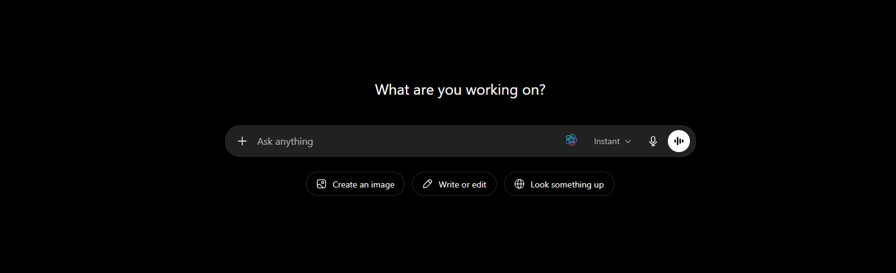

Validate the Installation
The extension needs both components running: the WebExtension in the browser and the native messaging agent on the device. All three checks must pass for events to reach the Quilr console.
Console-side validation — the fastest check
If the device successfully phoned home, it will show up in the Quilr Console within seconds of install. Open Settings → Browser Extension in your tenant Console and switch to the Deployment Status tab. Type the test user’s email / name in the search box.
| Column | Healthy value | If it’s wrong … |
|---|---|---|
| IdP User Status | Active | Disabled in IdP / not licensed — fix in IdP first. |
| Installation Date | Today’s date / time | Older / missing → the new install didn’t replace the old row — check the MSI version under Extension Version. |
| Browser | Edge / Chrome / Brave row with the current build number | Browser missing → the WebExtension never loaded; jump to Step 6 § chrome://policy. |
| Extension Status | Enabled | Disabled → user toggled it off or policy was removed. |
| Extension Version | Matches “Latest Extension Version” banner top-right | Stale → click Force Update or wait for the next auto-update. |
| Browser Utility Status | Enabled | Disabled → native messaging agent isn’t running; redeploy the MSI / pkg. |
| Browser Utility Version | Matches the agent build | Stale or empty → the MSI / pkg didn’t install or the user never relogged. |
| Last Seen | “a few minutes ago” / “just now” | > 1 hour → the device went offline. Confirm network access; run the Step 2 smoke test. |
| Persona Created | Yes | No → sign the user into the Quilr Console once in a browser tab to seed the persona; the next heartbeat picks it up. |

Yes.
Extension visible & enabled
Open your browser’s extensions page and confirm Quilr is present, enabled, and (for MDM deployments) marked “Installed by your organization” with no Remove button:
- Microsoft Edge:
edge://extensions - Google Chrome:
chrome://extensions - Safari (macOS): Settings → Extensions
Native messaging agent process running
The WebExtension cannot function without the quilr-native-messaging-agent binary.
Get-Process | Where-Object Name -like '*quilr*'Or check Task Manager (Details tab) for quilr-native-messaging-agent.exe.
pgrep -lf 'quilr-native-messaging-agent'Or search Activity Monitor for quilr-native-messaging-agent.
Popup status is green — persona active
Click the Quilr icon in the browser toolbar. The popup should display “Persona Active & Extension Enabled” with a green indicator, confirming:
- Both the WebExtension and native agent are running
- The user’s persona has resolved (the popup shows
Registered to: <user>@<tenant>) - Version numbers appear in the footer for both Extension and Agent

Registered to: … line in the body, and an Extension + Agent version pair in the footer. Anything red / yellow or a missing version pair is a Step 6 case.
Pass / fail criteria
- ✓Extension visible and enabled in browser settings
- ✓Native agent process running in system tools
- ✓Popup shows green status with version strings for both components
Functional test
Two quick visual checks against a real AI site — the first confirms the extension injected its UI into the page; the second confirms the native agent is actually relaying events to the backend.
Test 1 — Quilr icon visible in the prompt box
Open any of the popular AI websites below in the browser the user typically uses. When the page finishes loading and the prompt input is rendered, the Quilr icon — a small atom-style mark with a cyan/pink orbital ring — appears inside the prompt-input row, parked between the typing area and the right-side controls (e.g. mic / send buttons). That icon is injected by the WebExtension — if it’s there, the extension is loaded, has page-script permission, and matched the host’s content-script rule.
Ask anything text and the Instant model picker. On Claude / Gemini / Copilot it appears in the equivalent inline-controls strip of each provider’s prompt box. Hover for the tooltip “Quilr”; click to open the Quilr popover.
Instant.
| Provider | URL |
|---|---|
| Claude | https://claude.ai |
| ChatGPT | https://chatgpt.com |
| Gemini | https://gemini.google.com |
| Copilot | https://copilot.microsoft.com |
| Perplexity | https://perplexity.ai |
| Meta AI | https://meta.ai |
| Mistral · Le Chat | https://chat.mistral.ai |
Test 2 — Prompt round-trips to the Quilr console
With the icon visible, type a real prompt (e.g. “Summarise this paragraph in one line.”) into the prompt box on https://claude.ai and hit send. The event should appear in the Quilr console within ~2 seconds, proving the WebExtension → native messaging agent → backplane pipe is complete.
claude.ai), and prompt body captured. No event → the icon is loading but the native messaging bridge is broken; see Step 6.Test 3 — DLP control fires on a sensitive prompt
Tests 1 and 2 confirmed the extension renders and the pipe to the console is open. Test 3 confirms the policy half of the chain — a control configured in the console actually reaches the extension, the DLP engine matches a sensitive payload, and the Quilr popup blocks the user before the prompt leaves the device.
3.1 — Enable the “Prevent leakage” control in Action mode
- In the Quilr Console, open Controls and switch to the AI Risks tab.
- Search for
prevenand find the row “Preventing The Leakage Of Sensitive Data Via An AI App”. - Toggle Status on (green).
- In the Mode dropdown, pick Action (not Monitor). Monitor only logs; Action shows the block popup to the user.

Action.
POST /browser-extension/browser/personas/heartbeat, every 2 min). Wait at least 90 seconds after toggling Mode to Action before submitting a payload — otherwise the old policy is still in cache and Test 3 will pass-through instead of blocking.3.2 — Paste the synthetic-PII payload into an AI site
Open any monitored AI site (Claude / ChatGPT / Gemini / Copilot …) and paste the block below into the prompt input. Do not use real personal data — the block below is publicly-circulated synthetic test data (commonly-known fake SSNs / DOBs used in DLP smoke tests) included specifically so this validation never accidentally leaks real PII.
First and Last Name SSN Date of Birth
Robert Aragon 489-36-8350 6/7/1981
Ashley Borden 514-14-8905 7/8/1981
Thomas Conley 690-05-5315 8/9/1981
Susan Davis 421-37-1396 9/10/1981
Christopher Diaz 458-02-6124 1/10/1975
Rick Edwards 612-20-6833 2/11/1975
Victor Faulkner 300-62-3266 3/12/1975
Lisa Garrison 660-03-8360 4/13/1975
Marjorie Green 213-46-8915 5/14/1975
Mark Hall 449-48-3135 6/14/1975
James Heard 559-81-1301 7/16/1975
Albert Iorio 322-84-2281 8/17/1975
Charles Jackson 646-44-9061 9/18/1975
Teresa Kaminski 465-73-5022 10/19/1975
Tim Lowe 044-34-6954 1/20/1991
Monte Mceachern 477-12-8344 2/21/1991Click Send. Do not type quickly — the extension matches on the rendered prompt body, so it’s fine if the paste lands instantly.
3.3 — What you should see
PERSONALLY IDENTIFIABLE INFORMATION (PII) and the matched rows visible in the body. The user can’t submit unmodified — they have to edit the prompt and click Resubmit and Continue.![Quilr Action-mode block popup. Title: "Potentially Sensitive Data Detected." (yellow). Subtitle: "Please review it and remove the sensitive information before submitting it to this website." A tag labelled "PERSONALLY IDENTIFIABLE INFORMATION (PII)" sits under "Data types detected", plus a "Highlight Sensitive Data" button. The body shows the synthetic PII payload (Rick Edwards, Victor Faulkner, Lisa Garrison, …, Monte Mceachern) with their fake SSNs and DOBs. A green-outline "Resubmit and Continue" button sits in the bottom-right, with the Quilr logo and wordmark in the footer.](../../assets/quilr-popup-pii-block.png)
Action mode the user can override after editing, and that override is logged. For a true hard block (no override), use a higher-criticality control or set the Behavior to a no-bypass policy in the Console.3.4 — Confirm a Finding was generated in the Console
The popup only proves the block happened locally. The finding row proves the event was uploaded to the backplane and attributed to the right user, app, and control. Open Findings in the Console, switch to the Browser Extension Findings tab, then the AI Risks sub-tab. Filter Finding Type to A user shares sensitive data with an AI application.
![Quilr Console - Findings - Browser Extension Findings - AI Risks tab. Two findings titled 'A user shares sensitive data with an AI application' shown with Finding ID, timestamp (14 Jun 2026), Login Email canary-quilrai@quilr.ai, Persona Email canary-quilrai@quilr.ai, Department Not Available, Account Usage Type Corporate, App ChatGPT (chatgpt.com) tagged Approved / Critical, Auth Type Credentials (Username & Password), Browser Name chrome, Extension version 0.24204.736, Control 'Preventing The Leakage Of Sensitive Data Via An AI App', Event Prompt, Outcome Not available as of now. Each row tagged AI Risks / Low criticality.](../../assets/console-findings-be.png)
| Field on the finding | Healthy value | If it’s wrong … |
|---|---|---|
| Finding Type | A user shares sensitive data with an AI application | Different type → the popup matched a different control; recheck which control fired in 3.1. |
| Login Email / Persona Email | The test user’s email | Unknown or empty → persona didn’t resolve; see Step 6 § 7 (Persona not found). |
| App | The AI site you submitted on (e.g. ChatGPT — chatgpt.com) with its Approved / Critical tag | Listed as Unknown app → the host isn’t in the tenant’s monitored-apps list. |
| Browser Name + Extension version | Matches the browser + extension build you tested | Stale version → the extension hasn’t updated; click Force Update from Deployment Status. |
| Control | Preventing The Leakage Of Sensitive Data Via An AI App | A different control (or empty) → the rule that fired isn’t the one you enabled; verify Mode = Action in the Console and re-wait 90 s. |
| Event | Prompt | Paste / Upload when you expected a Prompt → the classifier fired on a different signal; usually harmless but tells you which content path matched. |
| Outcome | blocked (or Not available as of now on early-rollout builds — treat as success if Finding ID + timestamp are present) | Empty / dash → finding fired but the verdict didn’t persist; capture the Finding ID and escalate. |
| Device Name | The pilot device hostname | Empty → the native messaging agent didn’t supply the device context; reinstall the MSI / pkg. |
a4ead1ed-ff81-4830-bc43-d9cc8cec2cea in the screenshot). If a downstream system — SOAR, SIEM, ticketing — missed the event, hand the UUID to support; they can trace the whole upload · classify · persist chain from that single ID.Test 4 — Multi-channel DLP coverage (copy · upload · paste)
Test 3 covered the prompt channel — sensitive data typed / pasted into an AI site’s prompt input. Three other controls cover the remaining user-action channels. Enabling all four together confirms the DLP engine intercepts on every supported user signal, not just one.
4.1 — Enable the three additional controls (all Action mode)
In Controls → AI Risks, enable each row below and set Mode = Action. Same propagation rule as Test 3 — wait ~90 seconds after the last toggle before testing.
| Control name | When this happens | Behavior | Channel tested |
|---|---|---|---|
| User is copying sensitive data | a user is copying sensitive data | Users Copying Data | Browser copy (Ctrl+C / Cmd+C on selected text) |
| User is trying to upload sensitive data | a user is uploading sensitive data | Users Uploading Data | File upload / attach to an AI site |
| User is pasting sensitive data | a user is pasting sensitive data | Users Pasting Data | Browser paste (Ctrl+V / Cmd+V into any input) |

4.2 — Trigger each channel with the synthetic-PII payload
Use the same synthetic-PII block from Test 3.2 as the source content. After enabling all three controls + waiting 90 s, perform each action below in turn on a monitored AI site (Claude / ChatGPT / Gemini …). Each one should produce its own popup + finding.
| # | Action to perform | Expected popup & finding |
|---|---|---|
| 4.2a | Copy — open a page that already contains the synthetic-PII block (e.g. paste it into the prompt box of an AI site, then select it and press Ctrl+C / Cmd+C). | Popup with the same “Potentially Sensitive Data Detected” title fires at the copy moment — clipboard write is held / cancelled. Finding row in Console shows Event = Copy, Control = User is copying sensitive data. |
| 4.2b | Upload — save the synthetic-PII block as test-pii.txt on the desktop, then drag-drop or use the AI site’s attach-file button to upload it. |
Popup fires before the file reaches the AI provider. Finding shows Event = Upload, Control = User is trying to upload sensitive data; the file name appears in the matched-payload excerpt. |
| 4.2c | Paste — in another browser tab, copy the synthetic-PII block from a non-AI source (Notepad, a wiki page, etc.). Return to the AI site and paste with Ctrl+V / Cmd+V into the prompt input. | Popup fires on the paste event before the text lands in the input. Finding shows Event = Paste, Control = User is pasting sensitive data. (Distinct from Test 3’s “Prompt” event, which fires when the user presses Send.) |
4.3 — Confirm 3 distinct findings in the Console
Back in Findings → Browser Extension Findings → AI Risks, you should now have three new finding rows — one per channel — in addition to the one from Test 3. Filter Finding Type in the right-side panel to confirm each fired:
A user is copying sensitive dataA user is uploading sensitive dataA user is pasting sensitive data
Prompt / Copy / Upload / Paste).| Channel | If the popup didn’t fire |
|---|---|
Copy | Browser may block content scripts from reading clipboard writes on some sites. Verify the host is in Settings → Browser Extension → Monitored Apps; some hosts disable clipboard listeners and need an explicit allow. |
Upload | The AI site may use a non-standard file-picker (custom drag-drop zone). Try the explicit attach-file button instead. If still no fire, capture the upload widget’s DOM — the trigger selector may need a tenant-side update. |
Paste | Most common cause: the synthetic-PII source was already in the same AI site (which the extension counts as “Prompt”, not “Paste”). Copy from Notepad / TextEdit / a non-AI tab and retry. |
| What you saw | What it means | Where to look next |
|---|---|---|
| Popup appeared · Send blocked · Audit Log entry present | End-to-end DLP chain healthy. Move on to Step 5. | — |
| No popup · prompt sent through · no Audit Log entry | The control didn’t reach the extension or the DLP engine isn’t classifying SSN. | Re-confirm Step 3.1 Mode = Action, re-wait 90 s. If still nothing, open chrome://extensions → Quilr → Inspect views: service worker → Network tab — look for the controls/synctoui call and check it returned controls with this rule. See Step 6 § 7. |
No popup but the Audit Log does show the event with verdict monitor |
Control is in Monitor mode, not Action. The chain works; you just chose the wrong mode. | Flip Mode to Action in the Console, wait 90 s, retry. |
| Popup appeared but the Audit Log entry is missing | Extension intercepted locally but the upload to the backplane choked. | Check %APPDATA%\sentinel\logs for upload failed entries; see Step 6 § 6 (file-upload issues). |
| Popup appeared even on innocent prompts | The Sensitive-Data rule is matching aggressively (regex too broad), or another control is overlapping. | Open the control’s detail page in the Console; tune the rule and lower criticality if needed. |
Action.